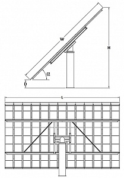

0Р
UST-TTDAT - двухосевой трекер имеет две степени свободы. Выполнен на столбе. В составе метеостанция, инвертор, возможно размещение до 60 PV-Модулей.
Одноосевой трекер азимутальный UST-VSAT с сезонной ориентацией выполнен в виде несущей конструкции, расположенной на одноповоротном утройстве. Привод по азимуту - 1 трёхфазный двигатель. Сезонная ориентация по зениту осуществляется с помощью винтовых домкратов вручную. Управление: блок управления трекером UST-DR-001. В состав трекера входит 3 инвертора. Полезная нагрузка: PV, CPV, HCPV-модули. При использовании PV-модулей мощностью 215 Вт максимальная выработка одного полного комплекта энергосистемы из 72 модулей составит 15,48 кВт. Максимальная мощность энергосистемы: 17,415 кВт (91 PV-модуль по 215 Вт). С одного блока управления выработка электростанции, состоящей из 64 трекеров, составит 1114,56 кВт. Количество блоков управления в электростанции не ограничено. Слежение за солнцем осуществляется по алгоритму солнечной позиции. Преимущества: — конструкция основания рабочей поверхности дает возможность использовать различные PV, CPV, HCPV-модули (различных размеров и мощностей); — максимальная мощность энергосистемы на базе данного трекера 17,415 кВт (91 PV-модуль по 215 Вт); — увеличение производительности энергосистемы по сравнению со стационарной до 30%; — система слежения работает по алгоритму солнечной позиции; — в основании бетонный фундамент; — выходное напряжение: 3×220 В (3 фазы по 220 В); — каждая фаза питается от отдельного инвертора; — количество инверторов: 3; — солнечный трекер UST-VSAT имеет систему контроля перемещения, систему удаленного управления и мониторинга; — двигатели трекера самозаписываются от инверторов системы, что приводит к снижению затрат на эксплуатацию и обслуживание; — блоком управления трекера можно управлять 64 трекерами (1114,56 кВт); — количество блоков управления в системе не ограничено.
| Осей вращения | 1 (вертикальная) |
| Рабочая поверхность | 107,13 кв.м. |
| Максимальная рабочая поверхность | 135,4 кв.м. |
| Мощность | 15.48 кВт |
| Максимальная мощность | 17415 кВт |
| Вертикальная ось вращения (азимутальные углы) | от -180° до 180° |
| Угол наклона | от 0° до 76° (в зависимости от широты места), может быть увеличен в зависимости от места расположения) |
| Двигатели с рабочим напряжением | 380 В (трёхфазные) |
| Дизайн | конструкция на опорно-поворотном устройстве |
| Вес | 2500 кг (без модулей и основания) |
| Максимальный вес модулей | 1500 кг |
| Основание | железобетонный фундамент (от 7,5 куб.м.), смотреть по месту |
| Максимальная скорость ветра | 140 км/ч |
| Температурный режим | от -40°С до +90°С |
| MAX габариты | по высоте до 9,4 м (с основанием), по вертикальной оси вращения - 14 м (MAX ширина рабочей поверхности) |
{kind=link}